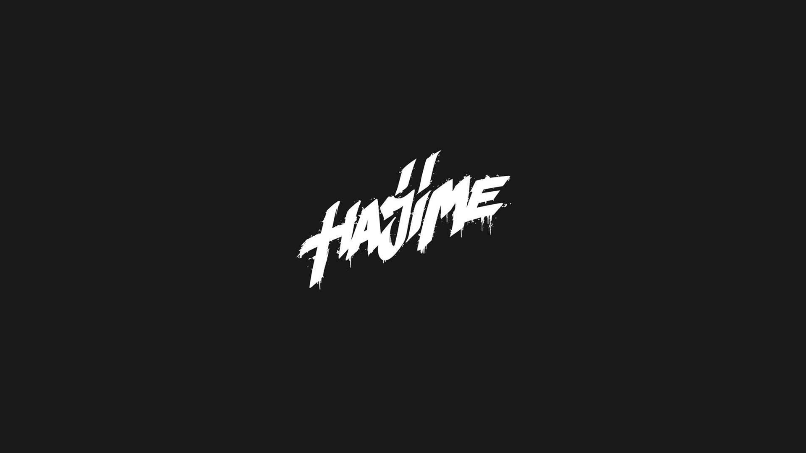
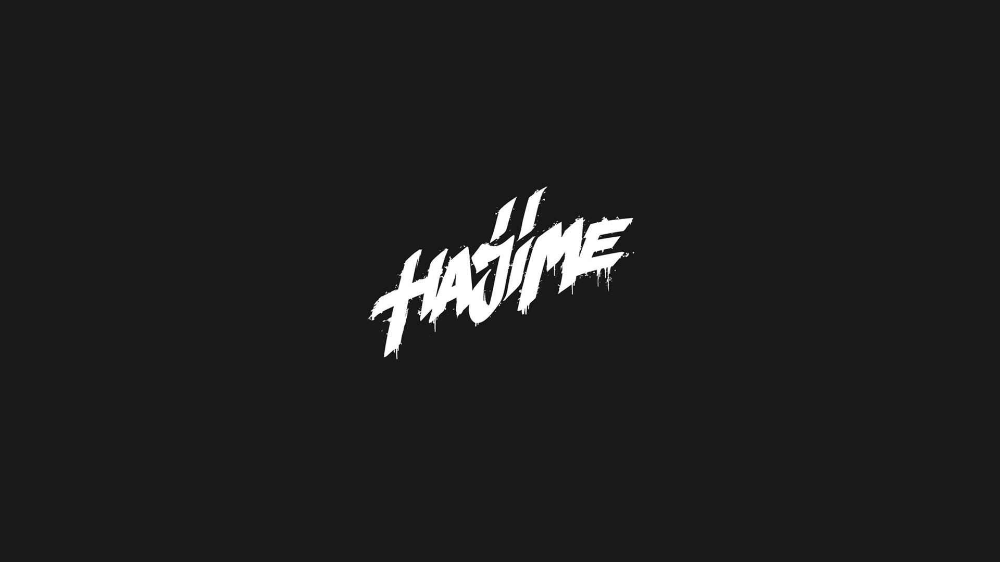

Мияги и Andy Panda родились во Владикавказе. Отец Азамата был известным хирургом и хотел, чтобы сын продолжил его дело. Однако Мияги выбрал другой путь. В 2007 году он начал заниматься рэпом и получил первую популярность.
Andy Panda по образованию технолог. Вдохновившись группой “Каста” он решил, что музыка для него важнее. Сначала у Сослана был псевдоним Эндшпиль, который со временем был изменен. Некоторое время парни находились в творческом объединении Dope Records. Начиная с песни “Санавабич” и фита с Элджеем “Музыка”, парни начали двигаться вместе. В результате слияния этих двух талантливых исполнителей вышла первая часть альбома Hajime. Уже тогда Мияги и Andy Panda дали понять слушателю, в каком направлении будут двигаться далее. Музыка Азамата и Сослана - это душа и мелодичное звучание.
В 2017 году парни создали свой музыкальный рэп-лейбл Hajime records. В его состав входят Мияги, TumaniYO, KADI, Castle, HLOY и KADI. Hajime с японского языка переводиться как “начало”. Первым участником лейбла стал TumaniYO. Этот хип-хоп исполнитель обрел популярность после участия в 17-ом Независимом баттле hip-hop.ru. Еще больше творчеством TumaniYO заинтересовались после его лонгплея FOG#ONE, который вышел в 2018 году.
Александр вырос в городе Астрахань и уже со школьных лет начал увлекаться музыкой. Тогда же он взялся за гитару и сделал первые шаги к созданию песен. В те времена был популярен “подъездный рэп”, однако Саше он не очень нравился в отличие от регги. Тогда он придумал и свой псевдоним. На районе у него была кличка “туман”. Позже она превратилась в псевдоним TumaniYO.
Однажды парень респектнул Эндшпилю за его трек “Джанго”. После этого Сослан ответил взаимностью Александру за трек Summertime. Затем TumaniYO скинул Эндшпилю демку трека It's My Life. В итоге парни записали совместную песню. После этого Александру предложили войти в состав Hajime records.
TumaniYO понял, что ему не стоит терять такой шанс и серьезно занялся музыкой. Он закончил университет в Астрахане и переехал во Владикавказ. На лейбле Александр выпустил дебютный альбом FOG#ONE. Лонгплей получился качественным и разноплановым. Для TumaniYO характерны разноплановость, мелодичность, огромный потенциал и уникальный стиль. Он называет свою музыку “лирикой урбана”. Еще один участник лейбла Hajime records Castle погружен в творчество во всех его проявлениях. Помимо музыки, он занимается фотографией, видеомонтажом, графикой. У Castle есть мечта поучаствовать в театральной постановке.
родом из Владикавказа. Еще с детства родители привили ему любовь к прекрасному. Он отучился в музыкальной школе, учил английский, играл на пианино. Первой серьезной работой Castle стал альбом The Simple Words, записанный на Iphone 5. Аслан по-настоящему гордиться этой работой. Стоит учитывать тот факт, что Castle хорошо владеет английским и все песни исполняет именно на этом языке. В сети нет информации о том, как исполнитель попал на лейбл Hajime records.
Настоящее имя Kadi - Хетак Кадиев. Псевдоним исполнителя образовался от его фамилии. Он исполняет свои песни на английском и пока не добился особой популярности. Парень записывает музыку от души. Тембр его голоса очень приятный и мелодичный. Английское произношение заставляет подумать, что это и вовсе иностранная музыка. Информации об этом артисте Хаджиме Рекордс практически нет. У Hloy есть фит с TumaniYO под названием Rainy Day. Помимо этой песни, у этих парней есть ещё несколько хороших треков.
В отличие от других лейблов Hajime records подбирает очень разношерстных артистов. Мияги и Andy Panda вообще не ограничивают себя в плане жанра. В одном из интервью рэперы заявили, что не чувствуют себя звездами, потому что это не очень хорошо влияет на отношение к жизни. Большинство участников Хаджиме Рекордс были не очень популярными до вступления в лейбл. Мияги и Andy Panda понимают, что благодаря своей славе они могут не только заработать, но и дать толчок другим музыкантам.
У Мияги и Andy Panda "есть свое лицо и стиль". По крайней мере, на территории СНГ таких найти невозможно. Рэперы обладают уникальным стилем, необычным голосом и харизмой. Мияги и Andy Panda цепляют чем-то своим: самобытным и чем-то простым.
У Азамат и Сослана нет каких-то топовых рифм, техники, глубоких текстов. Рэперы записывают музыку, чтобы слушатель кайфовал от полученных эмоций.Мияги и Andy Panda являются очень продуктивными рэперами. За шесть лет существования коллектива у них вышло много материала. Несмотря на большое количество выпущенных релизов, парни до сих пор могут удивлять Азамат и Сослан просто живут музыкой и их потенциал неисчерпаем. Главная ценность творчества рэперов - это душевность и искренность. Слушая песни хип-хоп исполнителей, слушатель реально сопереживает авторам трека.
Весной 2016 года Мияги и Andy Panda выпустили альбом Hajime. Следом за ним рэперы выпустили вторую часть лонгплея. В июне 2017 года выпустили клип I Got Love. Ролик стал одним из самых популярных рэп-клипов в странах СНГ. Режиссером ролика выступил Айсултан Сеитов. Помимо клипа на I Got Love, этот режиссер снял документальный фильм про хип-хоп дуэт из Владикавказа "Харизма". Завершающая часть трилогии Hajime вышла в 2018 году.
2019 стал годом сольного творчества для Мияги и Andy Panda. Азамат выпустил альбом Buster Keaton, в то время как Andy Panda - King Kong. В 2020 году Мияги и Andy Panda выпустили четвертый совместный альбом “Ямакаси”.
 
